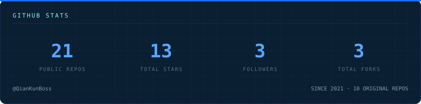
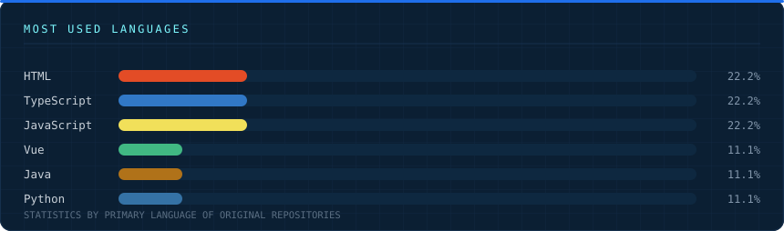

● LIVE
CSMS · 班级积分管理系统
csms.tianrld.top
面向各级学校的班级积分管理系统：多校分级管理、实时积分追踪、可视化座位表。
Nuxt 4Vue 3TypeScriptDrizzleSQLite
独立开发者，专注校园数字化系统与 Minecraft 工具链。
从数据库设计、权限模型，到交互动效，一个人走完全程。
面向各级学校的班级积分管理系统：多校分级管理、实时积分追踪、可视化座位表。
CSMS 官方文档站，覆盖部署、权限体系、数据模型与外部开放 API v1。
实时采集各设备的在线状态、负载与运行指标，异常自动告警。
基于 Cloudflare 的自建邮箱服务，收发一体、可安装到桌面，零服务器成本。
面向多用户的二级域名分发与解析管理平台，支持 A / AAAA / CNAME / MX / TXT 等记录。
把长链接压缩成短链，支持自定义 Slug，默认随机生成短 id。
多资源站聚合搜索与在线观看平台，一个入口搜遍多源影视资源。
LibreTV 版观影站，作为主站之外的备用线路，主站抽风时切过来。
解锁加密音乐文件并转换为通用格式，全程在浏览器内完成，不上传任何文件。
GitHub 文件下载加速代理，支持 release / archive / 单文件，文件走 JsDelivr。
网盘 / 博客 / 控制面板 / 监控大屏 …… 复制任意一张卡片即可扩展，风格自动统一。
班级操行积分管理系统。多租户物理隔离、四级权限体系、22 个 API / 8 张表，含 PWA 与开放 API v1。
Minecraft Fabric 模组的 MCP 服务端。通过 HTTP/HTTPS 为 AI 代理提供服务器监控、命令执行、性能分析等 37 个工具，支持 1.20.1 ~ 1.21.11 共 18 个版本。
让 CSMS 与 QQ 通联的 Koishi 插件，把积分查询与操作搬进群聊。
CSMS 官方文档站源码，跟随主库迭代，含部署指南、数据模型与 API 参考。



※ 后两张图需要网络访问（贡献热图与蛇形图）。蛇形图需先跑一次 Actions 才会生成。